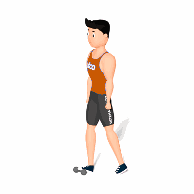

Dorsiflexão com Halter

O exercício irá trabalhar a mobilidade do tornozelo, auxiliando na execução de atividades físicas.
Ficha Técnica
Tipo: Mobilidade
Grupo Muscular: Perna
Aparelho: Nenhum
Músculos: Nenhum
Como realizar
- Com um halter no chão, coloque a ponta do pé direito sobre o centro do Halter e o calcanhar no chão;
- Agora incline seu corpo para frente de forma que o tornozelo realize uma dorsiflexão;
- Fique nessa posição por alguns segundos e retorne o corpo para atrás;
- Repita os movimentos pelas quantidade de vezes prescrito pelo professor(a).
 RC STORE
RC STORE